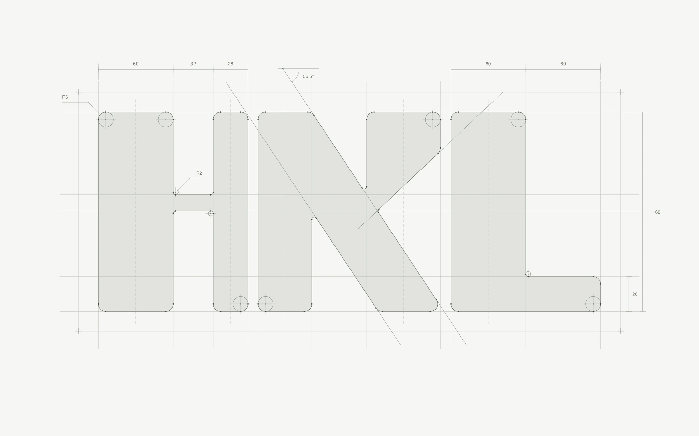
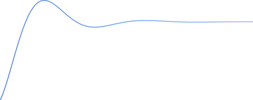

Color palette
Primary#3B82F6
Sub 1#9C6DFF
Sub 2#4FD1C5
GradientPrimary · Sub 1 · Sub 2
Light · #FCFCFFDark · #010102

작업을 소개할 포트폴리오 웹사이트를 기획하고 제작했습니다.
로고와 디자인 시스템부터 페이지 구성, 인터랙션까지 설계하며,
콘텐츠와 탐색 경험이 어우러지는 사이트를 만들고자 했습니다.
아래 세 가지 가치를 사이트의 핵심 콘셉트로 정하고,
탐색하는 과정 전반에서 경험할 수 있도록 했습니다.
대화형 챗봇으로 탐색을 돕는 AI 가이드
사이트를 탐색하는 과정에서 느끼는 재미
불편함 없이 콘텐츠에 집중하는 몰입
HNKL의 N과 K를 하나의 조형으로 결합하고,
전체가 자연스럽게 이어지도록 획을 다듬었습니다.

색상, 서체, 아이콘과 움직임의 기준을 정리해 페이지 전반에 일관성을 유지했습니다.
화면이 달라져도 하나의 사이트를 탐색하는 경험이 이어지도록 구성했습니다.
Aa 가
ABCDEFGHIJKLMNOPQRSTUVWXYZ
abcdefghijklmnopqrstuvwxyz
0123456789
Pretendard
Light 300 · Regular 400 · Medium 500
Semibold 600 · Bold 700
Aa 가나다
큰 제목
섹션 제목
콘텐츠를 나누는 소제목
읽기 편한 본문을 만듭니다.
설명을 보조하는 작은 글씨
이미지와 정보를 설명하는 캡션
Base scale · 1440 px desktop ×0.8
홈 화면의 AI가 다른 페이지에서는 마우스를 따라다니는
커서가 되어 방문자의 탐색 여정을 함께합니다.
이동 속도와 방향에 따라 유연하게 늘어나고,
멈추면 다시 원형으로 돌아옵니다.
인터랙션이 가능한 오브젝트 위에 마우스를 올리면
커서가 커져 반응할 수 있는 요소임을 알려줍니다.
Projects / Labs를 눌러 전환

선택 영역이 목표 위치를 조금 지나친 뒤,
작게 흔들리며 제자리에 멈춥니다.
Home메인 화면
About디자이너 소개
WorksProjects · 작업물
Labs · 인터랙티브 미디어
작업의 배경이나 제작 과정이 궁금할 때, AI 가이드와 대화하며 필요한 정보를 찾을 수 있습니다.
콘텐츠 위에 가볍게 열리는 대화창으로, 보던 화면을 벗어나지 않고 질문과 탐색을 이어갑니다.
제작 중인 페이지나 잘못 들어온 화면에서 필요한 안내를 인터랙션으로 풀었습니다.
잠시 멈추는 순간에도 작은 재미를 느낄 수 있도록 했습니다.